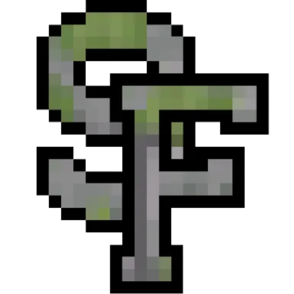
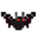

Silverfish are 5-0, and Week 5 may have been their most impressive win yet. The No. 4 Tropics threw for 732 yards against them and still lost by 34. BakkaGhostKofeyy accounted for 12 touchdowns: 10 passes plus 2 on defense. They also threw for 696 yards and ran for 101, a 231.2-point fantasy day. BakkaGhostGart caught 21 passes for 596 yards and 10 of those touchdowns, then intercepted 3 passes. Silverfish have now outscored opponents 374-82.
The rest of the top three held serve. The Devilbats scored 71 at the Mountaineers behind deybtww's 677 passing yards and 10 touchdowns, and the Allays beat the Totems 87-7. Further down, the Sniffers beat the Wardens 38-13 for their first win, which leaves the Totems as the league's only winless team going into Rivalry Week.
Winners
Silverfish. At 5-0 with a +292 differential, they're No. 1 in the MSSN power rankings and in all three units. BakkaGhostKofeyy leads all quarterbacks with 45 touchdown passes, and BakkaGhostGart leads all receivers with 2,074 yards and 35 touchdowns.
Allays. An 80-point win keeps them at No. 3. The defense intercepted 7 passes and recorded 8 sacks. MVP Raccnn threw for 549 yards and 7 touchdowns and ran for another. tacf scored 8 times, 4 rushing and 4 receiving, with 293 receiving yards and 4 interceptions on defense.
Raiders. A 56-39 win over the Traders makes them the week's biggest climbers, up two spots to No. 4. They threw for 642 yards and 8 touchdowns with just 1 interception, and Alexd8011 was named MVP. At 3-2 they're back above .500.
Sniffers. First win of the season: 38-13 over the Wardens, with Kitty7423 as MVP. They threw just 69 yards but scored 3 passing touchdowns. At 1-4 they now have a positive point differential (+10).
Losers
Totems. An 87-7 loss leaves them 0-5, the only winless team in the league. Through five games they've scored 26 points and allowed 362. They rank last in all three units.
Tropics. 732 passing yards and 6 touchdowns, and still a 34-point loss. Five interceptions were the difference. They fall to No. 5 at 3-2.
Mountaineers. They allowed 71 points and 125 rushing yards to the Devilbats and lost by 29, even with Tacoman5569 named MVP. They're 2-3 and drop to No. 6.
Wardens. 13 points against a team that came in 0-4. At 2-3 with a -60 differential, they rank ninth among quarterback rooms.
Scoreboard
| Matchup | Score | MVP |
|---|---|---|
| Allays @ Totems | Allays 87-7 | R Raccnn Raccnn |
| Wardens @ Sniffers | Sniffers 38-13 | K Kitty7423 Kitty7423 |
| Tropics @  Silverfish | Silverfish 77-43 | B BakkaGhostKofeyy BakkaGhostKofeyy |
 Devilbats @ Mountaineers | Devilbats 71-42 | T Tacoman5569 Tacoman5569 |
| Raiders @ Traders | Raiders 56-39 | A Alexd8011 Alexd8011 |
Power Rankings
| # | Team | Record | Move | Take |
|---|---|---|---|---|
| 1 | Silverfish | 5-0 | -- | 374 points scored, 82 allowed, and No. 1 in every unit. |
| 2 | Devilbats | 4-1 | -- | Their 341 points are second only to Silverfish, and deybtww has 42 touchdown passes. |
| 3 | Allays | 4-1 | -- | An 80-point win and the No. 2 defense. |
| 4 | Raiders | 3-2 | +2 | Eight touchdown passes and one interception in a clean win. |
| 5 | Tropics | 3-2 | -1 | They threw for 732 yards and still lost by 34. |
| 6 | Mountaineers | 2-3 | -1 | The No. 4 quarterback room, but 196 points allowed. |
| 7 | Wardens | 2-3 | -- | Held to 13 points by a team that had yet to win. |
| 8 | Sniffers | 1-4 | -- | Their first win, and a positive point differential despite the record. |
| 9 | Traders | 1-4 | -- | 289 points allowed in five games. |
| 10 | Totems | 0-5 | -- | The only winless team, with a -336 differential. |
Positional Power Rankings
Quarterbacks
| # | Player | Team | Stats |
|---|---|---|---|
| 1 | BBakkaGhostKofeyy | Silverfish | 114/182, 2,558 yds, 45 TD, 8 INT, 130.5 QBR |
| 2 | D deybtww deybtww | Devilbats | 113/223, 2,586 yds, 42 TD, 11 INT, 114.5 QBR |
| 3 | RRaccnn | Allays | 101/262, 2,841 yds, 27 TD, 16 INT, 90.2 QBR |
| 4 | J JtownW JtownW | Tropics | 82/230, 1,958 yds, 24 TD, 16 INT, 72.1 QBR |
| 5 | TTacoman5569 | Mountaineers | 102/218, 1,982 yds, 17 TD, 12 INT, 82.1 QBR |
deybtww has more passing yards (2,586) and 468 rushing yards, but BakkaGhostKofeyy's 45 touchdowns and 130.5 QBR keep the top spot.
Receivers
| # | Player | Team | Stats |
|---|---|---|---|
| 1 | B BakkaGhostGart BakkaGhostGart | Silverfish | 83 rec, 2,074 yds, 35 TD |
| 2 | T tacf tacf | Allays | 53 rec, 1,640 yds, 17 TD |
| 3 | F Flatvent_One Flatvent_One | Devilbats | 59 rec, 1,317 yds, 19 TD |
| 4 | O Ozimandias43 Ozimandias43 | Mountaineers | 63 rec, 1,401 yds, 11 TD |
| 5 | C canboon2 canboon2 | Devilbats | 41 rec, 1,195 yds, 21 TD |
BakkaGhostGart is the only receiver on the list past 2,000 yards, with 14 more touchdowns than anyone else on it.
Defenders
| # | Player | Team | Stats |
|---|---|---|---|
| 1 | RRaccnn | Allays | 55 tkl, 6 sacks, 6 INT, 17 swats |
| 2 | Ccanboon2 | Devilbats | 8 tkl, 16 sacks, 3 INT, 22 swats |
| 3 | BBakkaGhostKofeyy | Silverfish | 28 tkl, 5 sacks, 7 INT, 14 swats, 2 TD |
| 4 | BBakkaGhostGart | Silverfish | 27 tkl, 4 sacks, 14 INT, 1 swat |
| 5 | F ffdwz ffdwz | Devilbats | 32 tkl, 5 sacks, 10 INT, 3 swats |
Four of the five also rank among the top quarterbacks or receivers. The exception is ffdwz.
Players of the Week
- B
- B
- D
- R
- C
Week 6 Predictions
Week 6 is Rivalry Week, and all four games are tonight. MSSN model predictions:
| Matchup | Prediction | Win prob. | Why |
|---|---|---|---|
| Sniffers @ Raiders | Raiders 25-22 | 53% (toss-up) | The Raiders' No. 5 quarterbacks against the No. 7 defense, with little separating the two. |
| Mountaineers @ Traders | Mountaineers 50-25 | 72% (solid) | The No. 4 quarterback room against the No. 9 defense. |
| Totems @ Wardens | Wardens 58-17 | 83% (strong) | The Totems rank last in every unit. |
| Devilbats @ Tropics | Devilbats 56-30 | 72% (solid) | The No. 2 quarterbacks and receivers against the No. 3 defense. |
The game of the week is Devilbats at Tropics at 11:45 PM ET. The Devilbats have scored 341 points, the second-most in the league. The Tropics just gave up 77 to Silverfish, but their defense still ranks third. A Tropics win would pull them level with the Devilbats in the loss column. Sniffers at Raiders opens the night at 8:00 PM ET and is the model's closest call.
Rankings blend win percentage, point differential and the MSSN power model; player rankings use season totals; predictions come from each team's scoring, defense and power score so far.